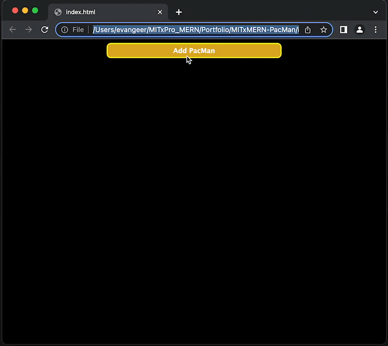

Purpose:
Simple project to demonstrate recursion and manipulating the DOM, while
observing the state of the window.
Repo:
github.com/EvanGeer/MITxMERN-PacMan
Base Requirements:
- PacMan should change direction at screen extents
- PacMan should make a chomping animation
Add-on scope:
-
Resizing the window should scootch the PacMen back in the frame and
retain the feel of their animation
- Single button should start the animation
-
Formatting should be more visually pleasing
- Button should be centered
- PacMen should be visible behind the button
-
Button should remain on top of the PacMen so that it can be clicked
when they hover over
Sample Image

Usage:
Pull repo and launch index.html
License
MIT License